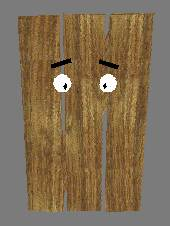

Barny
The Door
QuakeII player model
Model Details:
barny - Quake 2 player model, by ProzaQ the "chilled", SpiderMeister for the CtC playing, frag-happy, chook-owning band of Quaketeers:
Who
Clucked?
Clan website
You've heard the expression, "He couldn't hit a barn door!" And it came to pass that (finally) a sensible player-model for the hopeless came into being...
A really obvious model it (now) occurs to me - surprised no one has constructed it before. And, in keeping with just about everything else I seem to be doing nowadays, it doesn't lack for humour...
This is the first model I have build completely from scratch. It incorporates some spiffy wood-sounds, created by His Flatulence, and a rather nice-looking wood-textured skin as a base. Though for some reason, instead of the nice woody grain provided (as pictured above), it appears really yellow & 'pine' looking in the actual game - I can't work it out... So I named the 'base' skin accordingly... However, acceptable red and blue CTF skins have been created... Vweap support is included via the included fixweapon.bat. This is for two reasons, firstly to preserve the character of his pitch-fork, and two, to improve download time - by decreasing the archive's size.
There are far too many files in this archive to list individually, but essentially you should have:
In the interests of minimal confusion during the installation process, the files in this archive are pathed - relative to the basic Quake2 directory. Successfull installation of this player model will place the files in:
Quake2\baseq2\players\barny\[files]
buk... buk...
Sq'ark!
Feb 1999